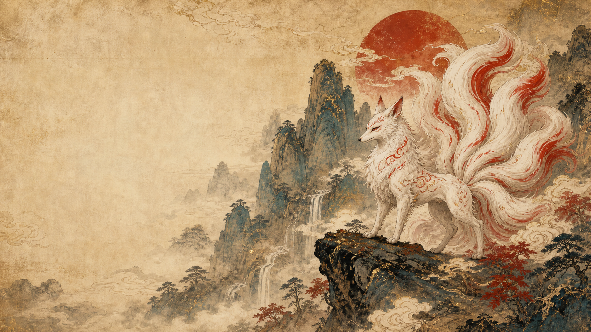

读山海，不止看怪兽。
它也记录了古人关于方位、灾异、祥瑞、祭祀与自然秩序的想象方式。专题文章列表
每张卡片都接着一条可读下去的线索：神兽典故通到详情页，视觉转译通到纹样与地图说明。
专题 · 地域 · 视觉转译
 山海异兽录
检索图鉴
山海异兽录
检索图鉴
读山海，不止看怪兽。
它也记录了古人关于方位、灾异、祥瑞、祭祀与自然秩序的想象方式。每张卡片都接着一条可读下去的线索：神兽典故通到详情页，视觉转译通到纹样与地图说明。